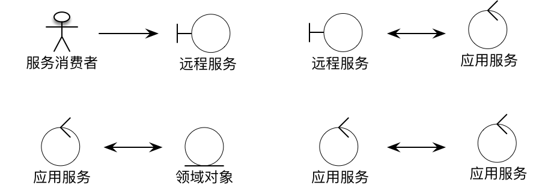
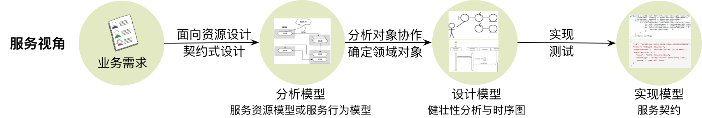
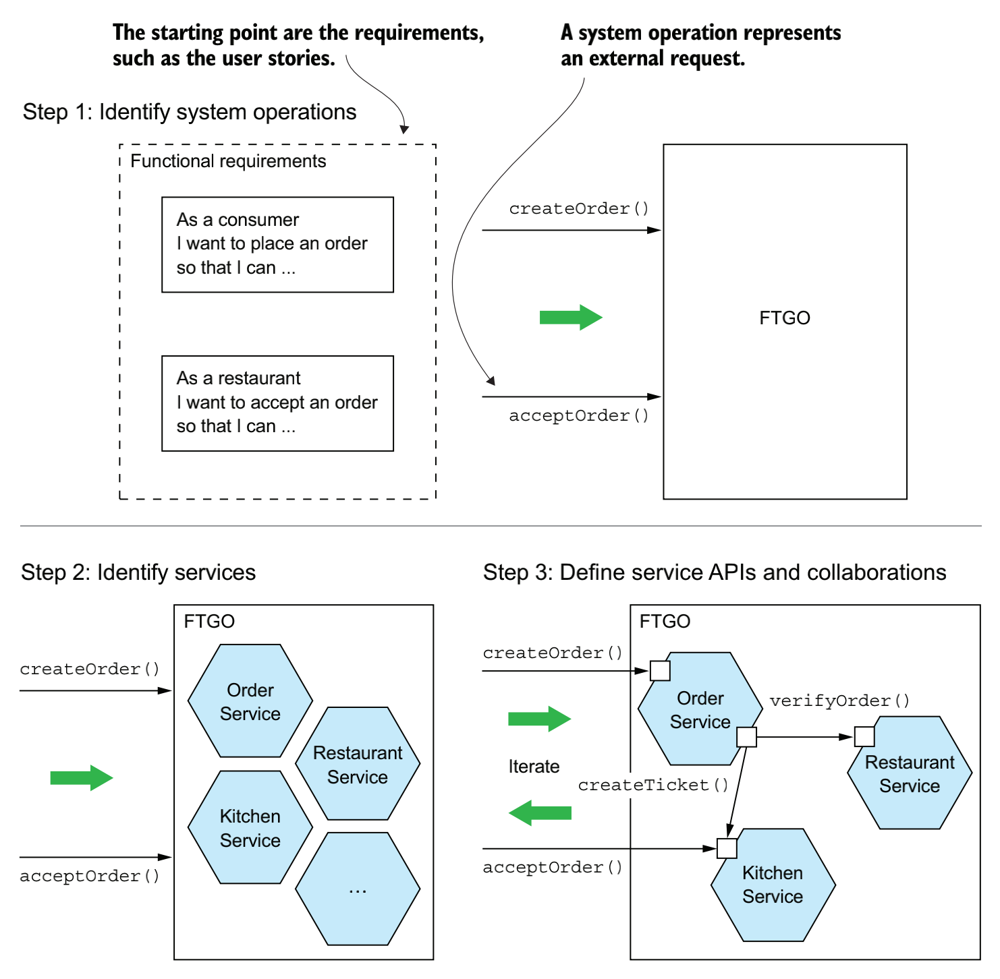

- 001 「战略篇」访谈 DDD 和微服务是什么关系？.md.html
- 002 「战略篇」开篇词：领域驱动设计，重焕青春的设计经典.md.html
- 003 领域驱动设计概览.md.html
- 004 深入分析软件的复杂度.md.html
- 005 控制软件复杂度的原则.md.html
- 006 领域驱动设计对软件复杂度的应对（上）.md.html
- 007 领域驱动设计对软件复杂度的应对（下）.md.html
- 008 软件开发团队的沟通与协作.md.html
- 009 运用领域场景分析提炼领域知识（上）.md.html
- 010 运用领域场景分析提炼领域知识（下）.md.html
- 011 建立统一语言.md.html
- 012 理解限界上下文.md.html
- 013 限界上下文的控制力（上）.md.html
- 014 限界上下文的控制力（下）.md.html
- 015 识别限界上下文（上）.md.html
- 016 识别限界上下文（下）.md.html
- 017 理解上下文映射.md.html
- 018 上下文映射的团队协作模式.md.html
- 019 上下文映射的通信集成模式.md.html
- 020 辨别限界上下文的协作关系（上）.md.html
- 021 辨别限界上下文的协作关系（下）.md.html
- 022 认识分层架构.md.html
- 023 分层架构的演化.md.html
- 024 领域驱动架构的演进.md.html
- 025 案例 层次的职责与协作关系（图文篇）.md.html
- 026 限界上下文与架构.md.html
- 027 限界上下文对架构的影响.md.html
- 028 领域驱动设计的代码模型.md.html
- 029 代码模型的架构决策.md.html
- 030 实践 先启阶段的需求分析.md.html
- 031 实践 先启阶段的领域场景分析（上）.md.html
- 032 实践 先启阶段的领域场景分析（下）.md.html
- 033 实践 识别限界上下文.md.html
- 034 实践 确定限界上下文的协作关系.md.html
- 035 实践 EAS 的整体架构.md.html
- 036 「战术篇」访谈：DDD 能帮开发团队提高设计水平吗？.md.html
- 037 「战术篇」开篇词：领域驱动设计的不确定性.md.html
- 038 什么是模型.md.html
- 039 数据分析模型.md.html
- 040 数据设计模型.md.html
- 041 数据模型与对象模型.md.html
- 042 数据实现模型.md.html
- 043 案例 培训管理系统.md.html
- 044 服务资源模型.md.html
- 045 服务行为模型.md.html
- 046 服务设计模型.md.html
- 047 领域模型驱动设计.md.html
- 048 领域实现模型.md.html
- 049 理解领域模型.md.html
- 050 领域模型与结构范式.md.html
- 051 领域模型与对象范式（上）.md.html
- 052 领域模型与对象范式（中）.md.html
- 053 领域模型与对象范式（下）.md.html
- 054 领域模型与函数范式.md.html
- 055 领域驱动分层架构与对象模型.md.html
- 056 统一语言与领域分析模型.md.html
- 057 精炼领域分析模型.md.html
- 058 彩色 UML 与彩色建模.md.html
- 059 四色建模法.md.html
- 060 案例 订单核心流程的四色建模.md.html
- 061 事件风暴与业务全景探索.md.html
- 062 事件风暴与领域分析建模.md.html
- 063 案例 订单核心流程的事件风暴.md.html
- 064 表达领域设计模型.md.html
- 065 实体.md.html
- 066 值对象.md.html
- 067 对象图与聚合.md.html
- 068 聚合设计原则.md.html
- 069 聚合之间的关系.md.html
- 070 聚合的设计过程.md.html
- 071 案例 培训领域模型的聚合设计.md.html
- 072 领域模型对象的生命周期-工厂.md.html
- 073 领域模型对象的生命周期-资源库.md.html
- 074 领域服务.md.html
- 075 案例 领域设计模型的价值.md.html
- 076 应用服务.md.html
- 077 场景的设计驱动力.md.html
- 078 案例 薪资管理系统的场景驱动设计.md.html
- 079 场景驱动设计与 DCI 模式.md.html
- 080 领域事件.md.html
- 081 发布者—订阅者模式.md.html
- 082 事件溯源模式.md.html
- 083 测试优先的领域实现建模.md.html
- 084 深入理解简单设计.md.html
- 085 案例 薪资管理系统的测试驱动开发（上）.md.html
- 086 案例 薪资管理系统的测试驱动开发（下）.md.html
- 087 对象关系映射（上）.md.html
- 088 对象关系映射（下）.md.html
- 089 领域模型与数据模型.md.html
- 090 领域驱动设计对持久化的影响.md.html
- 091 领域驱动设计体系.md.html
- 092 子领域与限界上下文.md.html
- 093 限界上下文的边界与协作.md.html
- 094 限界上下文之间的分布式通信.md.html
- 095 命令查询职责分离.md.html
- 096 分布式柔性事务.md.html
- 097 设计概念的统一语言.md.html
- 098 模型对象.md.html
- 099 领域驱动设计参考过程模型.md.html
- 100 领域驱动设计的精髓.md.html
- 101 实践 员工上下文的领域建模.md.html
- 102 实践 考勤上下文的领域建模.md.html
- 103 实践 项目上下文的领域建模.md.html
- 104 实践 培训上下文的业务需求.md.html
- 105 实践 培训上下文的领域分析建模.md.html
- 106 实践 培训上下文的领域设计建模.md.html
- 107 实践 培训上下文的领域实现建模.md.html
- 108 实践 EAS 系统的代码模型.md.html
- 109 后记：如何学习领域驱动设计.md.html
046 服务设计模型
无论是服务资源模型还是服务行为模型，都可以认为是服务契约。服务契约相当于是面向外部调用者的一个门面（Facade），基于分层架构的单一职责原则与关注点分离原则，我们应该尽量保证服务契约的职责单一，即接收调用者发送的请求，并在处理完业务逻辑之后返回响应消息。远程服务中真正的业务逻辑则应该委派给领域层。因此，一旦确定了服务契约，就应该从实现服务的角度向内推进。这种推进的过程可以认为是服务模型驱动设计的设计活动。
我们可以将 ICONIX 方法引入到服务模型驱动设计过程中。ICONIX 裁取了用例驱动设计与 UML 的核心子集，力求以最少步骤实现从需求、分析、设计到最后的代码实现。它通过 GUI 原型与用例分析获取需求，然后通过绘制健壮性图进行健壮性分析。健壮性图由边界对象（Boundary Objects）、控制对象（Control Objects）和实体对象（Entity Objects）构成，通过这种可视化图例与用例文本相对应来对需求进行健康检查。这个过程是领域分析和建模的过程，通过 ICONIX 健壮性分析可以帮助我们发现参与业务协作的对象。一旦识别了对象，就可以通过时序图表现对象之间的协作关系，从而确定职责的分配，定义对象的行为。该过程是一个动态过程。通过这个动态分析的过程又可以帮助我们建立静态的领域类模型，最终编写单元测试用例和实现代码。整个过程如下图所示：
图片来源：red-gate
ICONIX 是一种领域建模的方法，其中健壮性分析是连接需求用例与领域模型的重要工具，并由此获得健壮性图作为初步的分析模型。在服务模型驱动设计中，健壮性图定义的边界对象、控制对象与实体对象恰好可以对应为远程服务、应用服务与领域模型对象，这三种类型的对象从外向内参与了用例代表的业务场景。因而，我们可以参考 ICONIX 引入这三种对象类型的图示：
健壮性分析规定了边界对象、控制对象与实体对象之间协作的约束关系，这种约束关系在服务模型中同样存在。例如，以下对象类型之间的协作关系是允许的：

显然，服务消费者只需要了解提供服务能力的远程服务对象，即前面提及的服务资源或服务提供者。远程服务接收到服务消费者的请求后，在完成通信、路由和消息验证与转换等职责后，可以将请求委派给应用服务。同理，应用服务在接收到远程服务请求后，可以结合业务场景调用领域对象对业务逻辑进行编制，并完成一些与业务无直接关系的通用工作，如事务、认证授权、异常处理等。如果一个应用服务提供的功能无法满足远程服务的业务场景需求，可以引入应用服务之间的协作。
以下对象类型之间的协作关系是不允许的：
原则上，我们不允许服务消费者直接与应用服务和领域对象协作，事实上，应用服务与领域对象自身也不提供远程通信和消息序列化的能力。远程服务之间也不支持直接协作，这样既可以隔离因为上游远程服务变化带来的影响，又可以避免在远程服务中混入太多的实现逻辑。同理，也不允许远程服务与领域对象直接协作，原则上，需要将领域对象转换为服务对象。
在确定了这三种对象类型之间协作的约束后，我们就可以利用 ICONIX 健壮性分析来帮助我们识别具体参与业务场景的对象，并确定这些对象之间的关系。健壮性分析还可以帮助我们对业务场景进行一致性与完整性检查，驱动设计者发现之前未曾发现的对象，逐渐完善获得的模型。健壮性分析属于分析建模的方法，但在服务模型驱动设计过程中，由于我们已经建立了服务分析模型，它事实上做的是服务内部的设计。
让我们以培训管理系统的订阅课程用例来说明如何进行健壮性分析。如下是订阅课程的用例描述：
用例：订阅课程
* 参与者：学生（注册会员）
* 前置条件
* 订阅者已经登录
* 事件流
* 基本流
* 选定需要订阅的课程
* 选定具体的课程排期
* 确认该排期的课程可以订阅
* 确认该排期的课程未被同一学生订阅
* 订阅课程
* 成功订阅课程后，删除该学生期望列表中的课程
* 发送订阅成功消息给管理员与订阅学生
* 备选流
* 当该排期的课程无法订阅时，给出提示信息
* 当该排期的课程已被该学生订阅时，给出提示信息
* 若订阅失败，给出失败原因
* 后置条件：
* 课程被成功订阅，并生成学生的培训记录
* 期望列表中若存在该课程，则该课程被成功移除
* 管理员与订阅学生收到订阅成功的通知
我们需要从服务消费者以及作为边界对象的远程服务 CourseProvider（如果采用 REST 风格，则为 CourseResource）开始进行健壮性分析。这里的服务消费者是前端 UI 的课程订阅页面，它会向 CourseProvider 服务发送请求。根据健壮性分析的约束规则，远程服务对象只能与应用服务协作。由于课程订阅的逻辑与课程 Course 有关，因此需要定义 CourseAppService 应用服务与其协作。应用服务承担了多个领域对象之间的协作，在进行健壮性分析时，可以通过识别用例描述中的名词帮助寻找到对应的领域对象，包括课程 Course、排期 Calendar、期望列表 WishList，以及订阅成功后的培训记录 Training。它们之间的关系如健壮图所示：
健壮性图只是粗略地表达了领域对象之间的关系。通过以上模型，其实我们也看到了该图在表达能力上的不足。例如，图中的 SubscriptionValidator 与 TrainingRepository 皆被表示为领域对象，却没有清晰地说明二者之间的差别，以及它们是如何协作的。这时就可以引入时序图来弥补这些信息的缺失，通过行为来展现用例中的事件流，确认对象之间的协作关系：
说明： 本时序图通过 ZenUML 工具绘制，该工具可以通过编写轻巧简单的脚本，自动生成时序图。例如以上时序图的脚本就非常简单：
CourseProvider.subscribe(subscription) {
CourseAppService.subscribe(subscription) {
SubscribeCourseService.execute(course, calendar, stuId) {
SubscriptionValidaton.validate(course, calendar, stuId) {
TrainingRepository.exist(training)
}
TrainingRepository.save(training)
WishListAppService.remove(course, stuId)
NotificationAppService.notify(course, stuId)
}
}
}
这种绘图方式非常适合开发人员，编写脚本的过程其实也是驱动开发人员思考设计的过程。脚本的形式更容易修改，且这种修改是所见即所得的。若无特别提示，本书的时序图皆使用 ZenUML 绘制。
如果我们了解领域驱动设计的基础知识，就可以发现：从确定了服务分析模型之后，服务模型驱动设计以识别出来的服务契约对象为设计的起点，开始了由外向内的模型设计过程。在引入 ICONIX 进行健壮性分析及运用时序图表达对象之间的协作关系时，除了设计的驱动力有所不同之外，设计的方法、原则与目标都是在针对领域进行建模。换言之，在设计阶段，服务模型驱动设计与领域模型驱动设计就开始走向了过程与方法的合并；或者说，服务模型驱动设计成为了领域模型驱动设计的一个有力补充，它提供了从外部观察远程服务的视角。这是一种契约式设计与意图导向编程融合的设计思想，而 ICONIX 的引入则让我们有章可循，整个模型驱动设计的轨迹变得更加的清晰，每一个设计步骤都有着明确的方法和交付目标。
综合来看，无论是面向服务行为，还是面向服务资源，服务模型驱动设计的过程都是由外向内对业务知识的逐步细化与分解。设计的起点为远程服务，但随着设计的层层推进，最终还是会进入到领域层，建立领域模型来支撑服务功能。假设调用者为 Web，设计的方向就是从扮演基础设施北向网关（[参考《领域驱动设计实践（战略篇）》第 23 课]）功能的控制器作为设计的起点，通过识别控制器的接口，确定它需要操作和协作的领域对象。如果遵循领域驱动设计的分层架构，通过控制器可以驱动出应用服务的设计，进而进入到领域层的领域模型。这个过程其实与 Web 客户端对远程服务的调用时序不谋而合。
进入服务设计活动后，ICONIX 方法开始发挥强大威力，指导着由边界对象向内驱动的领域模型设计。ICONIX 的健壮性分析可以帮助我们得到初步的领域分析模型，再通过时序图建立分析模型中各种对象之间的协作关系，然后将其转换为类图表达的设计模型。由于要考虑领域逻辑，此时的服务设计模型其实属于领域模型的范畴。最后，通过编程语言结合时序图和类图进行编码实现，并编写单元测试用例保证代码的正确性与可读性。实现代码与单元测试既包含服务实现模型的一部分，即服务契约的实现，又包含领域实现模型。
服务实现模型
正如前所述，服务模型驱动设计的实现模型其主体是领域实现模型。这是本课程将要花费大量篇幅讲解的内容，这里就不再赘述。但是，服务实现模型还有一部分是服务契约的实现，包括服务资源模型与服务行为模型的实现。
在介绍服务分析模型时，我已经讲解了服务契约定义的原则与规范，例如服务资源契约需要遵循 REST 风格的 API 设计规范，服务行为契约则需要从契约精神中的权利与义务来思考服务的接口定义。在实现这些服务契约时，我们需要遵循 Postel 原则（Postel's Law），即“对接收的内容要宽容，对发送的内容要严格”。言简意赅地讲，就是“严于律己宽以待人”。这一原则最初是针对 TCP 协议设计的，HTML 5 的设计也遵循这一规范。
什么是宽以待人呢？就是服务契约的前置条件不能规定太死板，要允许接收与标准不一致的输入。假设 REST 服务资源的响应消息定义为：
{
"id": "d290f1ee-6c54-4b01-90e6-d701748f0851",
"name": "Widget Adapter",
"releaseDate": "2016-08-29T09:12:33.001Z",
"manufacturer": {
"name": "ACME Corporation",
"homePage": "https://www.acme-corp.com",
"phone": "408-867-5309"
}
}
倘若客户端发送的请求消息缺少了 manufacturer\homePage 的值，多余增加了一个 manufacturer\address 值，又或者 manufacturer 的属性值并未按照指定的顺序发送，服务端在接收这样的响应消息时，同样应该正确地执行。当然，这种放松并非完全不做任何约束，如果协议规定 id、name、releaseDate 及 manufacturer\name 是必须提供的值，服务实现时就需要验证这些值是否存在，如果不存在，应该返回 404 状态码，表示一个非法请求。
相反，服务契约的实现在处理完服务功能后，返回的响应消息却应该严格按照标准定义。例如服务资源契约就要求响应消息必须提供正确的 HTTP 状态码，如果涉及到状态迁移，也必须给出指向下一个资源的链接。如果是 JSON 格式的响应消息，也必须遵守当前契约版本规定的标准，提供正确的属性值内容。
服务模型驱动设计的过程
服务分析模型的起点不同，设计服务契约的驱动力也将不同，并带来不同的服务契约规范。以资源为中心的服务契约与领域模型之间存在一定的对应关系，因为它们都是表达领域概念的名词描述；以行为为中心的服务契约更倾向于权利与义务的分配，从而形成消费者与服务之间的良好协作，但最终还是要落实到远程服务的主体之上，该主体同样表达了领域概念。因此，服务模型驱动设计获得的服务分析模型可以作为领域驱动设计的重要输入。
在进入服务模型驱动设计的设计活动时，ICONIX 方法扮演了非常重要的作用。通过建立以远程服务、应用服务与领域对象之间的健壮性图，顺理成章地推导出这些角色对象参与协作的时序图，从而奠定了设计模型中重要的领域概念与领域行为。当然，我们也可以直接沿用领域驱动设计的理念与模式，这时就自然而然地从服务模型驱动设计转换到领域模型驱动设计。至于服务实现模型中对服务契约的定义，实际上弥补了领域驱动设计中关于如何实现开放主机服务（OHS）的这部分知识。因此，一个典型的服务模型驱动设计过程如下图所示：

服务模型驱动设计还可以与领域驱动设计的战略设计阶段结合起来，例如限界上下文提供的开放主机服务实则就是一个开放的微服务。既然我们已经确定了限界上下文的边界，自然应该识别出属于该边界范围内的所有微服务，并确定微服务的 APIs 与协作方式，进而推进到领域层中，确定当前限界上下文中领域对象的协作时序，以及可能参与协作的第三方服务。
Chris Richardson 在《微服务架构设计模式》一书中给出的服务设计步骤与我介绍的服务模型驱动设计有相似之处。Chris Richardson 将微服务的设计分为三个步骤：
- 识别系统操作（System Operations）：从业务场景角度识别客户端的调用需求，并确定系统与客户端协作的方式，例如确定是命令（Command）还是查询（Query）。
- 识别服务：通过系统操作明确提供业务能力的职责，识别出应该履行职责的服务。
- 定义服务的 APIs 和协作方式：确定对外公开的接口，同时确定内部各个服务之间是如何协作的。
Chris Richardson 以一个虚拟 FTGO 系统的订单场景为例展现了整个设计过程：

在识别服务的过程中，Chris 建议使用名词动词法对业务场景进行分析，将用户故事中的名词映射为领域对象，建立高层领域模型，然后从调用者角度驱动出服务能够处理的请求获得系统操作，再根据系统操作的两种类型（命令与查询）确定操作的职责。Chris 认为，系统操作是一种抽象，它与具体的分布式通信方式无关。在识别微服务时，应该忘记服务的实现机制，仅仅从交互的业务场景判断参与者、协作方式、API 及其需要履行的职责。这种方式其实就是建立在服务行为模型之上的服务模型驱动设计过程。
注：ZenUML 项目的创始人是肖鹏。他曾经担任 ThoughtWorks 中国区持续交付 Practice Lead，也是我在 ThoughtWorks 任职时的 Buddy 与 Sponsor，目前在墨尔本一家咨询公司任架构师，业余时间负责 ZenUML 的开发。ZenUML 除了提供 Web 版本之外，还提供了 Chrome、Jira 以及 Confulence 的插件。我在项目实践中经常使用 ZenUML 来驱动我的领域设计。脚本与可视化的时序图结合，可以帮助我们更好地思考执行时序与对象之间的协作方式。